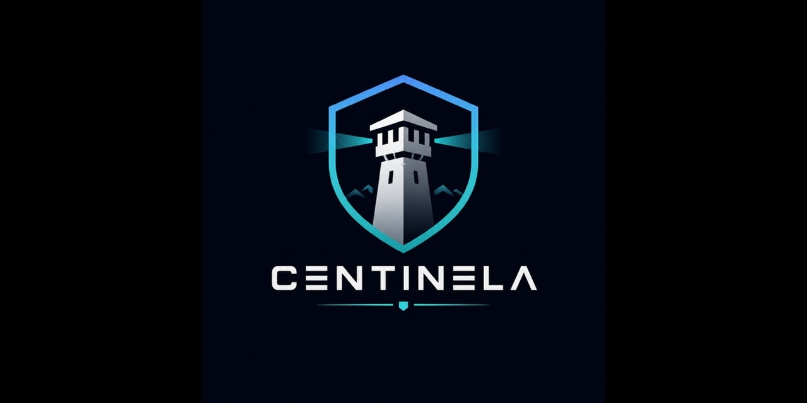

Centinela
plan → code → tests → validate → docs — enforced
A development workflow enforcer for Claude Code and OpenCode. It turns the five-step discipline from a suggestion into a mechanical constraint — agent hooks block out-of-order writes automatically.
go install github.com/samuelnp/centinela@latest
Five steps. No skipping.
Every feature advances through the same five steps in order. A step only advances when its required artifacts exist — and the hooks block any file write that doesn't belong to the current step.
- plan brief · plan · spec
- code implementation
- tests unit · int · accept
- validate gates + suite
- docs generated HTML
Describe a project. Get a roadmap. Ship it feature by feature.
Centinela's greenfield flow scaffolds an entire project: it interviews you, generates a phased roadmap of features, then walks each feature through the enforced five-step loop.
Describe your project
Tell the agent what you want to build. Centinela writes PROJECT.md — your archetype, stack, and rules.
Centinela generates a roadmap
ROADMAP.md + .workflow/roadmap.json — phases, each holding feature chips.
Advance each feature through the loop
Pick a feature chip and run it through plan → code → tests → validate → docs. Every chip gets the same enforced treatment before it merges to main.
↳ runs in its own git worktree · merges back when all gates pass
Enforcement is mechanical, not advisory.
Try to write source code during the plan step and the prewrite hook stops you cold — with a reason and the exact artifacts you owe first.
No human has to remember the rule. The hook runs on every write, for every agent, automatically.
A 30-second tour.
From centinela init to a validated, merged feature — recorded straight from the CLI.
Recorded with vhs · the hero renders instantly; this GIF loads lazily, below the fold.